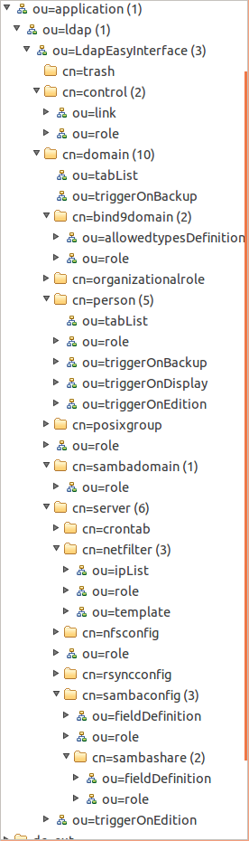

Cet objet est implémenté par la classe "
connectFrontend".
Il est appelé par toutes les interfaces graphiques d'administration (cf. menuBar : "
Action/Connect"),
aussi bien en mode interactif (par la forme ci-dessus) que lors d'une
connexion automatique, telle que, par ordre de priorité :
- par passage des arguments de connexion, via la ligne de commande, lors du lancement d'une interface,
- via le rappel des paramètres éventuellement sauvegardés par l'opérateur lors de la dernière session de travail (fichier : ~/.frontends/"nom_de_l'interface".xml),
- via la mémoire partagée (IPC - shared memory) préalablement initialisée par une autre session d'interface déjà en cours d'utilisation, sous le même login Unix ...
- par connection interactive.
Le principe d'une connexion interactive est le suivant :
- Clic sur le bouton <Connect> : la forme étant renseignée, une première connexion à l'annuaire définie par le champ "Uri" est réalisée en mode "anonymous". Si cette connexion n'est pas possible (URI
erronée, droits insuffisants ...), la procédure est abandonnée.
- Recherche du "DN"
de l'utilisateur renseigné : S'il n'existe pas ou que l'information
est ambiguë (ie: plusieurs occurrences trouvées), la procédure est
interrompue. Dans le cas d'un DN ambigu (plusieurs occurrences
trouvées), il reste à l'utilisateur la possibilité d'indiquer le "DN" complet de son identifiant de connexion (exemple: "cn=Manager, dc=mydomain") au lieu de la simple information de login (ici "Manager") ...
- Reconnexion automatique sous l'identité de l'utilisateur renseigné : ce dernier
doit disposer, en pratique, de certains accès définis par
l'administrateur de l'annuaire. Il doit notamment avoir
à minima accès en lecture à l'arborescence de paramétrage des frontaux
d'administration "LdapEasyInterface" (voire même, selon certains
profils qui lui seront accordés, l'accès en écriture à certaines partie
de cette arborescence). Il doit aussi avoir, bien évidement, l'accès
aux informations gérées au travers de l'interface ...
- Vérification de l'existence de l'arborescence de
paramétrage de l'interface graphique d'appel : à défaut, l'objet "connectFrontend" va essayer de créer cette arborescence ; il convient donc dans ce
cas que l'utilisateur connecté soit effectivement un administrateur de
la base, sinon l'utilisateur sera
informé du manque des droits nécessaires à une telle
initialisation et sera déconnecté. En revanche, si cette vérification est
correcte et que l'objet "connectFrontend" trouve ce dont il a besoin, le programme continuera directement à l'étape 9 décrite ci-dessous. Si
il y a besoin d'initialiser certaines informations de paramétrage absentes, le programme continuera à l'étape 5 suivante.
- Création de l'arborescence de paramétrage de l'interface graphique d'administration : A défaut d'un paramétrage complet existant, une fenêtre de
dialogue va donc s'afficher, précédée de son "aide en ligne"
expliquant ce qui est attendu de l'opérateur. Dans un premier temps, il peut être demandé de situer la racine de l'arborescence de paramétrage commune à l'ensemble des interfaces d'administration (par exemple, cela pourrait être "ou=LdapEasyInterface,ou=ldap,ou=application,dc=mydomain"). Si cette saisie n'est pas menée à
terme, l'utilisateur sera déconnecté car aucun fonctionnement
d'aucune des interfaces graphiques d'administration ne sera dans ce cas possible.
- Vérification des rôles applicatifs accessibles à l'utilisateur : En cas de succès de l'étape 5 précédente, il peut être signalé à
l'opérateur qu'aucun rôle n'est encore défini dans l'annuaire actuel pour l'interface en cours
d'utilisation. Deux solutions existent :
- soit l'interface en cours est justement celle
permettant de
définir de tels rôles (auquel cas, l'opérateur aura tout loisir de
mener à terme cette définition, tout autant bien sûr qu'il possède au
niveau de l'annuaire les droits d'administration suffisants),
- soit, il sera indiqué à l'opérateur qu'il peut trouver un modèle de
définition des rôles nécessaires dans le menu "aide" de l'application en cours. Ce modèle (au format LDIFF)
ne concerne que les rôles spécifiques à l'application en cours
d'exécution ; il sera donc nécessaire de ré-itérer la même opération pour chaque
interface soumise à une gestion des rôles dans son utilisation ; le contenu "LDIFF" proposé
pourra être copié à la souris et coller dans un fichier texte pour
ensuite être éventuellement adapté et appliqué à la base d'annuaire (ldapadd - c'est l'une des raisons pour
lesquelles cette tâche devra de préférence être menée par l'administrateur de la base
...).
- Vérification de définition du domain "corbeille" : Si cela n'a encore jamais été fait, l'objet "connectFrontend" va demander à l'opérateur de localiser la corbeille dans la base d'annuaire. Il s'agira d'un nom de domaine (en "dc=..." ; par exemple : "dc=_deleted,dc=mydomain")
dans lequel seront localisés tous les effacements logiques futurs de
l'annuaire (via les fonctions de suppression des interfaces graphiques
d'administration "LdapEasyAdmin").
Ce domaine spécifique (ou corbeille) devra être par ailleurs créé par l'administrateur (par
exemple, via
l'interface graphique de gestion des domaines "domainFrontend" ;-), faute de quoi, le
profil "autorisation des suppressions" éventuellement accordé à l'utilisateur en cours sera temporairement désactivé sur de telles actions ...
- Vérification de définition de la localisation des objects gérés par l'interface : Dans cette étape, si besoin est, quelques informations supplémentaires seront demandées à l'opérateur, à savoir : la localisation de l'arborescence de stockage, le nom de l'attribut de stockage de
l'identifiant de l'objet géré par l'interface en court, ...
Des aides en lignes guident l'opérateur en proposant des valeurs
par défaut ...
- Choix du profile de connexion : L'utilisateur
étant identifié et le paramétrage de l'interface vérifié, il reste maintenant à définir
le profil (et ses rôles associés) qu'il aura pendant la prochaine
session de
travail. Si aucun profil défini n'est trouvé par l'object "connectFrontend" dans la base d'annuaire pour
l'utilisateur sollicitant la connexion,
la procédure s'arrêtera là et l'utilisateur sera éjecté de
l'application. En revanche, si un profil existe effectivement, la procédure de
connexion sera effectuée. Si plusieurs profils
existent (cas de "responsabilités multiples" affectées à une
même personne), alors la liste des profils trouvés sera affichée (avec détails en
info-bulles/tooltips) dans la partie basse de
la forme
de connexion. Il ne restera donc plus à l'opérateur qu'à sélectionner l'un des profils de
connexion qui se proposent à lui, ceci en fonction du travail qu'il souhaite
réaliser et du
profil d'administration requis pour cela ...
- Fin de la procédure de connexion à l'annuaire : Une fois la sélection validée (double-clic ou action du bouton <Selected
profile>), la forme de connexion sera fermée, la connexion à l'annuaire sera effective et l'objet "connectFrontend" passera la
main à l'interface graphique d'administration qui disposera dorénavant des
possibilités de gestion définies pour le profil de connexion validé.
Les accès effectifs pour l'utilisateur maintenant connecté correspondent à des
profils, des
rôles
et des domaines autorisés qui ont préalablement été définis par l'administrateur de l'annuaire,
pour le
compte de connexion de cet utilisateur ...
A
tout moment, l'utilisateur pourra revenir à cette forme de connexion afin,
par exemple, de changer de profil de connexion, ou éventuellement, de se
reconnecter sous un éventuel autre compte de connexion ...
Quelques remarques :
- concernant la gestion des profils :
- L'utilisation de profils multiples n'est pas obligatoire. Un seul
profil par utilisateur peut être défini et regrouper l'ensemble des
rôles applicatifs attribués à un utilisateur donné, cela pour l'ensemble (ou pas) des
interfaces de gestion. La façon de gérer ces rôles restera à
l'initiative de l'administrateur en charge de cette tâche ...
- le champ "Uri" doit
impérativement (bien sûr : hors cas de connexions pour simples
consultations) renseigner un annuaire de référence (writable), et non l'une de ses
réplications
éventuelles dans le cas d'une architecture d'annuaires dupliqués et/ou déportés !... ;-)
- les
droits attribués sur chaque domaine réseau de compétence sont
valables pour toute l'arborescence située sous ce domaine (ou
sous-domaine) ; ils sont donc notamment hérités automatiquement dans
les
sous domaines fils éventuellement définis sous cette racine
(ie. depuis le domaine père) ...
- concernant l'étape 4 :
Lorsque il s'agit de la première fois qu'une GUI appelant cette forme de connexion ("
connectForm")
est lancée, aucun paramétrage n'est encore défini relativement à cette nouvelle GUI au sein de l'annuaire. Ainsi, la forme de
connexion "
connectForm" va détecter cette absence de paramétrage et va déclencher, si besoin est, l'appel automatique au masque d'écran ci-dessous qui
permettra ainsi, à l'administrateur de l'annuaire, de renseigner le
paramétrage absent.
Si en outre
, il s'agit d'un premier lancement toutes interfaces
LdapEasyInterface confondues, l'object "
connectForm"
appellera préalablement deux autres formes supplémentaires pour
permettre de définir : d'une part, la localisation souhaitée du domaine
"
corbeille" au sein de
l'arborescence LDAP et, d'autre part, la localisation de la racine
commune de tous les paramétrages d'interfaces graphiques du projet "
LdapEasyInterface" ...
Voici un aperçu du masque de saisie permettant de définir le paramétrage spécifique à chacune des Interfaces graphiques :
- le champs "rdn" permet de spécifier le rdn de stockage des objets gérés par l'interface graphique en cours d'exécution (ici, par exemple, les objets "serveurs"),
- le champs "dn" n'est qu'un champs de visualisation du "dn" résultant de la définition du "rdn" précédent. Sur la copie d'écran ci-dessus, il indique que tout serveur, défini dans l'annuaire "dc=mydomain",
sera physiquement stocké au sein de son sous-domaine d'appartenance, et
dans un sous-répertoire de nom (choisi par l'administrateur) : "ou=server,ou=computer".
Quoiqu'il en soit, des valeurs de paramètres par défaut sont
proposées, soit au niveau des aides spécifiques sur chacun des champs
(
toolButton), soit par des valeurs pré-renseignées dans les champs de saisie
eux-mêmes.
Voici un exemple d'arborescence de configuration obtenue :

Voici un
exemple au format "LDIFF" de paramétrage obtenu ...
Cette
forme de connexion est donc implémentée au sein de la classe "
connectFrontend" qui est utilisée par chacun des programmes d'interfaces graphiques d'administration du projet "
GNU/LdapEasyAdmin". Il
s'agit par conséquent d'un espace commun de définition de fonctionnalités partagées
par l'ensemble des interfaces graphiques d'administration.
C'est pourquoi on trouve notamment dans cette classe la gestion de la mémoire partagée (cf. "
man ipc") qui va être utilisée par chacun des processus GUI pour communiquer avec les autres (y compris d'ailleurs, par
certains outils d'aide à la saisie).
Ainsi, la connexion courante de l'utilisateur (identification et
profil sélectionné) y sera en premier lieu renseignée, chacune des
nouvelles GUI lancées se synchronisant (lors des rafraîchissements d'affichages) sur le
changement éventuel de
connexion opéré (login/profil) au sein de l'une d'entre elles.
On trouve également dans de cette classe, la gestion de la position
courante au sein de l'arborescence LDAP (current index) qui, modifiée par action de
l'utilisateur au sein de l'une des interfaces ouvertes, sera
répercutée en temps réel à toutes les autres interfaces graphiques en cours
d'exécution sur le poste de l'utilisateur (cela, relativement à son login
unix de connexion).
Les sources de la dernière version (
20110921) sont
ici.
Cette classe sera compilée et pourra faire l'objet d'une bibliothèque en mode
statique ou dynamique, à l'instar de l'API LDAP C++ : "
ldapcppei".
Depuis la version 1.0 (juillet 2010), une gestion de version de cette classe de connexion
permet dans ce cas un contrôle automatique de cohérence à chaque lancement de l'une des interfaces.